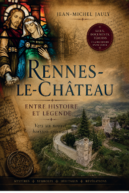

Pour prolonger ce cheminement
L’histoire de Marie-Madeleine nous conduit naturellement vers d’autres périodes, d’autres personnages et d’autres traditions qui ont contribué à façonner notre mémoire du christianisme.
Ce site n’a pas la prétention d’apporter des réponses définitives.
Il propose simplement de rassembler quelques éléments, de distinguer autant que possible les faits historiques des traditions et de laisser à chacun la liberté de poursuivre sa propre recherche.
Car parfois, c’est en rapprochant des éléments apparemment éloignés que de nouvelles questions apparaissent.
Rennes-le-Château
Dans mon ouvrage « Rennes-le-Château — Entre histoire et légende — Vers un nouvel horizon spirituel », je poursuis cette démarche à travers l’étude de l’affaire Saunière, de son histoire et des nombreuses traditions qui l’entourent.

Découvrir le site consacré à Rennes-le-Château
Nostradamus
Un autre chemin mène vers Nostradamus, ses Centuries et les traditions qui se sont développées autour de leur mystérieux contenu.
Découvrir le site « Nostradamus : Rennes-le-Château et les Centuries »
Pour aller plus loin
Marie-Madeleine reste une figure ouverte.
Entre les quelques traces laissées par les textes anciens et les récits qui se sont construits au fil des siècles, chacun peut poursuivre son propre cheminement.
L’Histoire pose des limites.
La Légende ouvre des portes.
Entre les deux, il reste toujours une place pour la recherche.